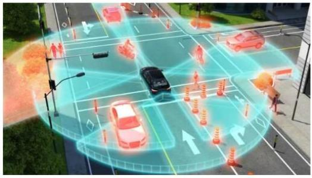
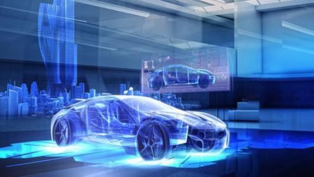
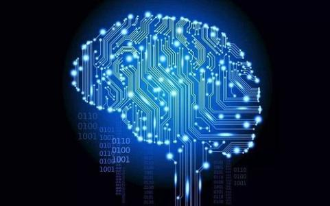
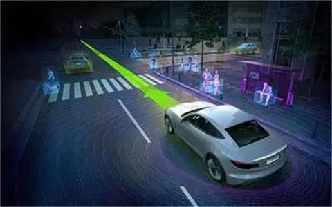

按照递阶控制结构理论及交通系统的层次性结构特性，可将基于互联网思维数据流模型应用的智能驾驶系统的逻辑框架自下而上划分为：感知层、网络层、分析层和应用层。
感知层介绍
感知层，即数据采集层，主要由影响驾驶的各要素信息构成，即人、车、路的信息采集及三者信息的相互联系与交叉影响，主要可以分为以下两点：
（1）路况信息的采集，如道路几何构造，路面状况，道路灾害，路网条件及交通状况等，一般可通过GPS或北斗系统等高精度导航系统进行采集。
（2）车辆信息，车辆信息主要包括车辆原始数据，如（车辆型号，车辆理论参数等）以及车辆行驶动态数据，如（行车速度，行车时间、行车轨迹等），一般可通过CAN总线的方式进行数据采集。
网络层介绍
网络层，即数据的传输调度层，路况信息在经过导航系统进行数据采集后通过报文通信的方式进行数据传输，车辆信息有CAN总线进行数据采集后以GPRS通信模块的方式进行数据传输，数据传输至本层后，由本层进行汇总整合后传输至分析层中。
分析层介绍
分析层，即大数据的分析处理层，由于大数据采集与处理的无序性，在已定义的函数模型下，对影响驾驶的数据进行计算处理。处理结果将传送至应用层中，同时将返回至网络层中进行存储与调用，并在网络层中建立行驶数据库。
应用层介绍
应用层，即应用服务层，依据数据采集与处理的结果，通过数据接口的方式可进行跨应用，跨系统之间的信息共享与信息协调。在互联网的大数据应用思维及互联互通的理念下，智能驾驶系统的应用主要为分为三大模块：用户服务系统、交通管理系统、汽车营销系统。